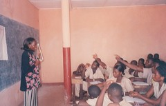

Kevin Walsh

Current Classes
Previous Classes
- Fall 2019, CSCI 131—Techniques of Programming
- Fall 2019, CSCI 226—Computer Systems and Organization
- Summer 2019, ABRD 304—Social Justice in Context (Bangalore, India)
- Spring 2018, CSCI 346—Operating Systems
- Spring 2018, CSCI 226—Computer Systems and Organization
- Fall 2017, CSCI 131—Techniques of Programming
- Fall 2017, CSCI 226—Computer Systems and Organization
- Spring 2017, CSCI 356—Computer Networking
- Spring 2017, CSCI 226—Computer Systems and Organization
- Fall 2016, CSCI 131—Techniques of Programming
- Fall 2016, CSCI 226—Computer Systems and Organization
- Spring 2016, CSCI 346—Operating Systems
- Spring 2016, CSCI 226—Computer Systems and Organization
- Fall 2015, CSCI 131—Techniques of Programming
- Fall 2015, CSCI 226—Computer Systems and Organization
- Summer 2015, ABRD 304—Social Justice in Context (Bangalore, India)
- Spring 2015, CSCI 135—Discrete Structures
- Spring 2015, CSCI 356—Commputer Networking
- Fall 2014, CSCI 131—Techniques of Programming
- Fall 2014, CSCI 226—Computer Systems and Organization
- Fall 2013, CSCI 131—Techniques of Programming
- Spring 2013, CSCI 131—Techniques of Programming
- Spring 2013, CSCI 346—Operating Systems
- Fall 2012, CSCI 131—Techniques of Programming
- Fall 2012, CSCI 226—Computer Systems and Organization
- Spring 2012, CSCI 110—Survey of Computer Science
- Spring 2012, CSCI 399—Special Topics in Computer Networking
Previous Classes [Cornell]
Previous Classes [Lycée Cabral, Fria, Republic of Guineaa]